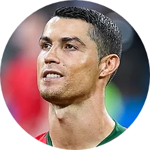

|  |
Cristiano RonaldoAthlete Influencer |
At age 16, Ronaldo was promoted from Sporting's youth team by first-team manager László Bölöni, who was impressed with his dribbling.[22] He subsequently became the first player to play for the club's under-16, under-17 and under-18 teams, the B team and the first team, all within a single season.[17] A year later, on 29 September 2002, Ronaldo made his debut in the Primeira Liga, against Braga and on 7 October, he scored two goals against Moreirense in their 3–0 win.[23] Over the course of the 2002–03 season, his representatives suggested the player to Liverpool manager Gérard Houllier and Barcelona president Joan Laporta.[24] Manager Arsène Wenger, who was interested in signing Ronaldo, met with him at Arsenal's grounds in November to discuss a possible transfer.[25]
Ronaldo has six children. He first became a father to a son, Cristiano Jr., born on 17 June 2010 in the United States.[525] He stated that he has full custody of the child and would not be publicly revealing the identity of the mother per an agreement with her.[526][527] In January 2015, Ronaldo announced that his five-year relationship with Russian model Irina Shayk had ended.[528]
Ronaldo has said that he does not drink alcohol,[536] and he received libel damages over a Daily Mirror article that reported him drinking heavily in a nightclub while recovering from an injury in July 2008.[537] He also does not have any tattoos as he regularly donates blood and bone marrow.[538]
| 2003-2007 | Development |
| 2007-2012 | Captaincy |
| 2021 | Top Goalscrorer |